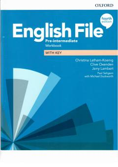

EFIngliz tili pre-intermediate darajasi uchun amaliy mashqlar daftari.
Ushbu kitob ingliz tilini o'rta-boshlang'ich darajada o'rganuvchilar uchun mo'ljallangan amaliy mashqlar to'plamidir. Grammatika, lug'at boyligi va nutq ko'nikmalarini mustahkamlash uchun turli xil topshiriqlarni o'z ichiga oladi.